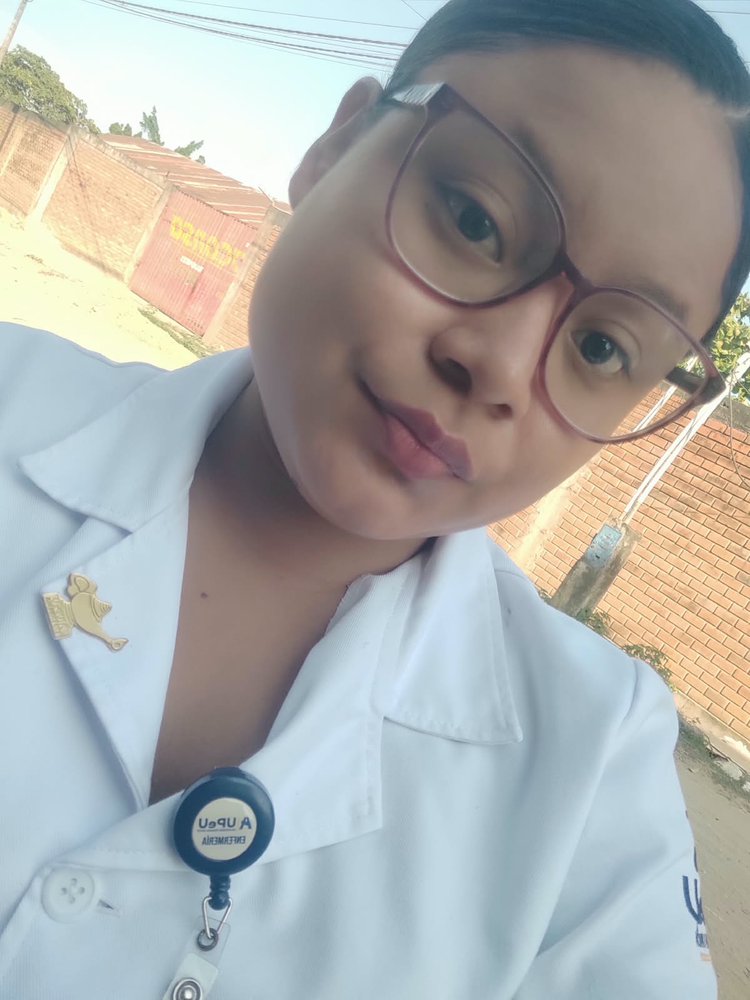

Mi presentación
Portafolio académico
Ética y Deontología en Enfermería
Nombre de la institución
Año académico 2026

Mishel Pasmiño Ishuiza
Estudiante de Enfermería
Mi biografía
Soy estudiante de enfermería y estoy en proceso de formación profesional. Me esfuerzo cada día por adquirir nuevos conocimientos y desarrollar habilidades para brindar una atención de calidad, humana y respetuosa.
Misión y visión
Mi misión
Formarme como una profesional responsable, comprometida y humana, brindando atención con respeto, empatía y vocación de servicio.
Mi visión
Llegar a ser una profesional competente, capaz de brindar cuidados integrales y contribuir al bienestar de las personas, familias y comunidades.
El curso
Descripción
El curso permite conocer los principios, valores y normas que orientan el comportamiento profesional del personal de enfermería.
Competencia
Reconoce y aplica principios éticos y deontológicos, promoviendo el respeto a la dignidad y los derechos de los pacientes.
Metodología
Actividades teóricas y prácticas, análisis de casos, reflexiones y trabajos individuales y grupales.